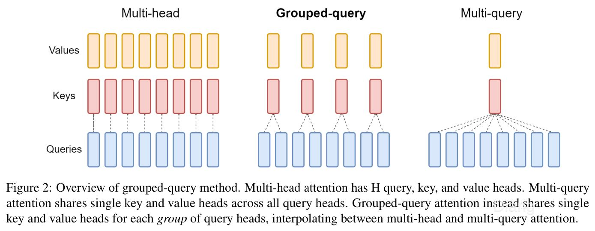
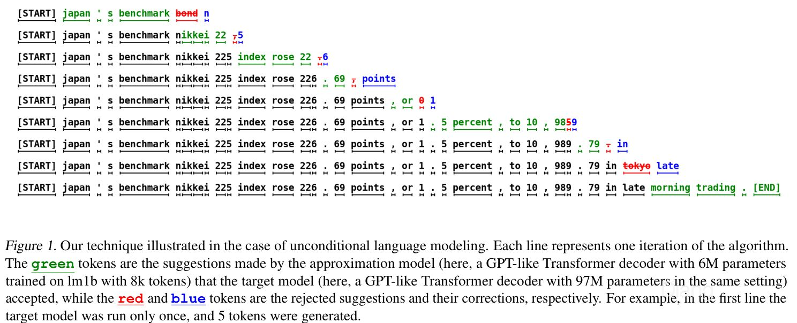
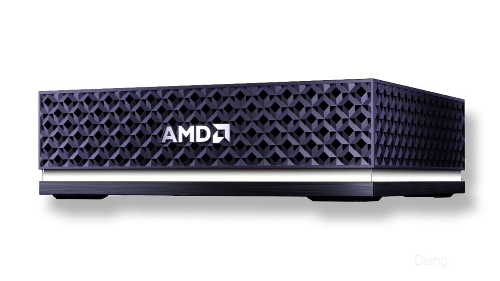
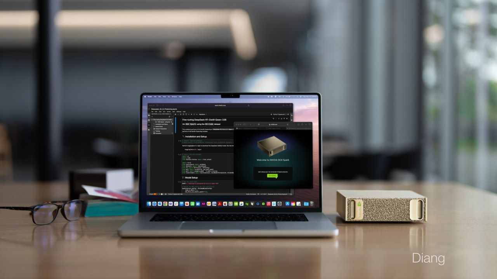
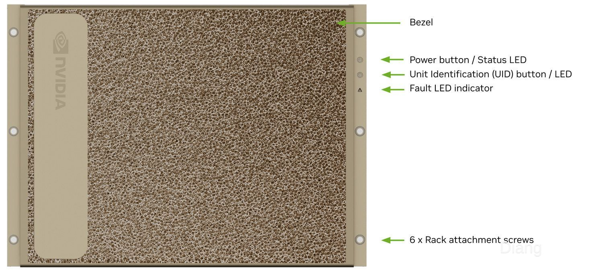

大模型推理的执行机制与性能约束
权重已经给定，推理系统要把新输入变成输出，并安排请求如何使用内存、算力和设备间连接。本文只讨论推理；数值曲线为带有明确假设的公式计算，硬件规格与论文原图另有出处。
一、推理性能指标
同样叫 tokens per second（TPS），一份跑分写每秒几十个 token，另一份写几千个。它们可能统计了不同的东西：前者是一条回答，后者是整台服务器上几十条回答的总和。模型和显卡的差距，未必有数字看上去那么大。
聊天窗口里的等待可以分开计时。从发送请求到首个 token 出现，是首 token 延迟（time to first token，TTFT）；请求若先排队，这段时间也在其中。开始输出以后，相邻 token 之间的间隔是 token 间延迟（inter-token latency，ITL）。整个回答耗时多久，还取决于输出长度。[1]
假设首 token 用了 0.8 秒，随后每隔 20 毫秒输出一个 token，一共输出 256 个，那么总时间约为：
这个算例的后半程约为 50 token/s，若把首 token 等待也算进去，端到端速率约为 43.4 token/s。计时是否包含提示处理、输出量是统计单条回答还是合计所有请求，都必须随跑分一起说明。
| 指标 | 回答的问题 | 容易漏掉什么 |
|---|---|---|
| TTFT | 用户多久看到第一个 token？ | 排队、输入预处理和 prefill 都可能在里面 |
| ITL / TPOT | 开始输出后，平均或每一步要等多久？ | 平均 TPOT 会掩盖中途停顿和长尾 |
| 单请求输出 TPS | 一条回答生成得多快？ | 通常不等于端到端速率 |
| 总输出 TPS | 一段墙钟时间内，所有请求共输出多少 token？ | 吞吐增加时，单个用户可能更慢 |
| 满足时延目标的有效吞吐 | 有多少工作在约定的 TTFT、ITL 等限制内完成？ | 超时、失败和排队过久的工作不能当成同样有用的产出 |
| Agent 任务完成时间 | 修改代码、检索或分析这件事何时做完？ | 多轮模型调用、工具执行、重试和验收 |
下文的“总吞吐”，统一按同一时间窗口内所有请求的输出 token 总数除以墙钟时间计算，输入 TPS 另计。跨模型时，tokenizer 对同一句话的切分也会不同，因此还要比较相同任务的完成时间。至于服务系统的 goodput，只有附上时延目标与成功判定条件，数字才有明确含义。[2]
二、自回归推理过程
输入编码与聊天模板
运行模型需要权重、网络结构、tokenizer、特殊 token 和聊天模板。界面中的角色、工具定义、历史消息都要按这个格式变成输入序列。同一段文字换一种聊天模板，送进模型的输入就可能不同，回答和缓存复用也会受影响。[3]
一个 token 可能是常见词、词根、汉字，也可能是字节片段，长度并不固定。Tokenizer 把输入编码成 token ID，embedding 再按 ID 查表得到向量。在常见的 decoder-only Transformer 中，这些向量经过多层 attention、前馈网络、归一化与残差连接，最后变成词表里各个候选 token 的 logits。[4]
Logits 是尚未归一化的候选分数。采样器按温度、top-p 等规则选出下一个 token，贪心解码则直接选择分数最高的候选。选出的 token 随即成为下一步的输入。
常规自回归解码因此有一条串行依赖：上一步选词结束，下一步的输入 token 才能确定。增加 GPU 可以加快其中的计算，却不会自动给出后面 100 个未知 token。
左右滑动查看完整图表；键盘聚焦后可用方向键。
图 1｜常见自回归请求的执行过程。Prefill 处理已知提示，最后一个位置的 logits 可以直接产生第一个输出 token；之后进入 decode 循环。图中没有按时间比例绘制。
Prefill 与 Decode 的计算差异
Prefill，通常译作预填充，处理的是整段已知提示。即使有数千个 token，它们的值也都已经确定，同一层便能把许多位置合在一起计算，形成较大的矩阵乘法。因果掩码仍然生效，每个位置只能关注自己和更早的位置。
到了 decode，单条序列每步只增加一个新位置，线性层更接近矩阵乘向量。权重没有变，一次可处理的 token 却少了很多，硬件需要应付的计算形状随之改变。[5]
生成循环可以简化为下面的机制伪代码。它省略设备调度，函数名不对应具体框架的 API：
1 | prompt_ids = tokenizer(chat_template(messages, tools)) |
KV Cache 的缓存机制
Attention 把当前位置的 query（Q）与历史位置的 key（K）匹配，再按得到的权重汇总 value（V）。单个头的核心形式是：
d_h 表示注意力头维度，M 表示掩码。在因果模型里，追加新 token 不会改变已经处理过的历史位置，因此各层的历史 K、V 可以保留下来，供下一步直接读取。这些状态就是 KV Cache。[6]
有了 KV Cache，模型不必对旧位置重新执行网络、重新生成 K、V。新位置仍要完成投影和前馈计算，并读取所需的历史 K、V。上下文越长，需要保留和访问的状态就越多；省下重复计算的同时，每条活跃序列也在持续占用内存。
权重通常供多个请求共用，KV 则跟着各自的序列变化。只有前缀完全相同，请求之间才有进一步共享缓存的机会。
三、模型结构
稠密模型与 MoE 的参数访问
稠密模型的主要层对各个 token 使用同一组权重。一个 d × h 的线性层，按乘加计两次浮点运算，处理单个 token 约需 2dh 次运算。权重规模增加，通常既增加存储和读取量，也增加线性计算量。
混合专家模型（mixture of experts，MoE）通常把部分前馈层换成一组专家，由 router 为每个 token 选少数几个执行。Attention、路由器和某些共享专家仍然参与计算。于是，模型总共存了多少参数，与当前 token 用了多少参数，可以相差很大。DeepSeek-V3 的公开报告给出 671B 总参数、每 token 约 37B 激活参数；B 表示十亿。[7]
下一批 token 可能访问另一组专家。要让它们立即执行，所有可能被选中的权重都得保持可访问，通常需要把总权重放在整个部署的内存或显存里；否则，就要付出按需加载的代价。671B 参数按理想 4 bit 打包，原始权重约为 335.5 GB，尚未计入量化元数据、未量化部分和运行空间。37B 激活参数描述的是当前计算路径，不能把整个模型的存储缩成 37B。
即使激活参数相近，MoE 与稠密模型的时延也可能不同。专家矩阵的大小会影响执行效率，路由需要时间，负载可能不均，专家所在 GPU 之间还可能需要通信。
左右滑动查看完整图表；键盘聚焦后可用方向键。
图 2｜MoE 的稀疏性需要说明是“对一个 token”还是“对整个批量”。假设某一个 MoE 层有 64 个路由专家，每 token 均匀选 8 个，不同 token 的选择独立，批量触及的专家期望数为 E[1−(1−k/E)B]。它仅用于解释覆盖效应，并非前文 DeepSeek-V3 的实际专家配置；真实路由也不满足这种均匀独立假设。
批量增大后，命中同一专家的 token 可以复用权重读取，但新增 token 也会把更多专家带进这一轮计算。MoE 能复用多少权重，要结合整批 token 的路由来看，不能照搬稠密模型的批量收益。
模型分类
MoE 决定哪些前馈参数参与计算，attention 或状态空间结构决定怎样处理历史。这些分类轴可以组合，无法把“稠密、MoE、Transformer、混合模型”排成互斥的四选一。
| 分类轴 | 典型选择 | 对推理的直接影响 |
|---|---|---|
| 哪些前馈参数参与当前 token | 稠密、MoE | 每 token 运算量、专家权重访问、路由与跨卡通信 |
| 怎样保存和访问序列历史 | Attention、状态空间或循环结构、二者混合 | KV 或循环状态的大小，长上下文的访存与计算 |
| 怎样生成完整输出 | 自回归、扩散式或其他迭代生成 | 串行依赖、每轮可处理的位置、停止条件 |
| 接受什么输入、产生什么输出 | 纯文本、多模态 | 图像/音频编码、输入长度、额外模型与流水线 |
在 attention 内部，多头注意力（multi-head attention，MHA）通常为每个查询头配置对应的 K、V 头。多查询注意力（multi-query attention，MQA）让查询头共享一组 K、V；分组查询注意力（grouped-query attention，GQA）处在两者之间。MQA 和 GQA 减少了需要保存、读取的 K、V 头数，但模型结构必须事先支持这种共享，部署时无法随意删头。[8][9]

来源：Ainslie et al.，GQA，Figure 2，arXiv:2305.13245v3。CC BY 4.0；从原论文裁切，未改图中文字。
多头潜在注意力（multi-head latent attention，MLA）使用压缩的潜在表示，缓存形态与普通 GQA 不同。估算 MLA 的内存，应看具体模型和运行时保存了什么；下一节的普通 K、V 公式不能直接套用。[10]
Mamba 等状态空间模型沿序列更新状态，无需按完整 attention 的方式保存所有历史 token 的 K、V。混合模型则可能只在部分层使用 attention，需要把各类层的状态分开计算，再加总。扩散语言模型通过多轮更新位置来生成序列，也不完全符合“每轮追加一个 token”的 decode 过程。后文以自回归 Transformer 为主，适用范围要据此判断。[11][12]
四、推理内存占用
权重存储与运行时开销
运行时除了权重，还需要 KV、激活和工作区，以及框架本身占用的空间：
运行时开销包括分配器额外保留的空间、计算图和通信缓冲区等，能复用多少取决于框架与配置。留给模型的可用内存，还需扣除系统和其它进程的占用。
原始权重的存储量可以用参数个数 P 乘以每参数字节数 b_w 估算。对一个 8B 参数的假想模型，16 bit 约需 16 GB，8 bit 约需 8 GB，4 bit 约需 4 GB。实际量化文件还有 scale、分组信息，以及保留高精度的张量，大小通常会偏离这个理想值。[13][14]
本文 GB 为 109 字节，GiB 为 230 字节，4 GB 约为 3.73 GiB。硬件标称容量、操作系统显示单位和模型文件大小若混用这些单位，临近容量上限时就容易误判。
KV Cache 占用的估算方法
对使用常规 K、V 缓存的全注意力层，假设每条序列长度相同、各层结构相同，缓存占用为：
最前面的 2 对应 K 和 V 两份数据。L 为层数，B 为活跃序列数，S 为已缓存的 token 数；H_KV 是 K、V 头数，d_h 是头维度，b_KV 是每个缓存元素的字节数。请求长度不同时，把 B × S 换成各序列缓存长度之和。[6][9]
后面的计算统一使用这个配置：32 层、8 个 K、V 头、头维度 128，K、V 均为 BF16，每元素 2 字节。单条序列缓存 8192 个 token 时：
16 条这样的序列，需要 16 GiB 原始 KV 数据。即使权重从 16 bit 压到 4 bit，BF16 KV Cache 也不会随之变成 4 bit；两者需要分别配置、分别实现。
左右滑动查看完整图表；键盘聚焦后可用方向键。
图 4｜同样的 32 层和 128 维头，改变 K、V 头数后，缓存占用会明显变化。上下文中的 k=1024；纵轴为 GiB，双对数坐标。曲线为单序列、BF16 K/V 的公式结果，未计分配器、填充和工作区，不适用于 MLA 的压缩缓存。
“支持 128k”说明模型允许处理的上下文范围，16 条 128k 请求能否同时驻留，则要重新计算内存。滑动窗口 attention、前缀共享、缓存量化和淘汰策略都可能改变实际占用，前提是模型结构或运行时支持。
量化的存储、计算与精度影响
W4A16 表示权重为 4 bit、激活为 16 bit，并不能据此认定 GPU 执行了原生 4 bit 乘法。内核可能先把打包权重还原到更高精度，也可能利用硬件的低精度矩阵单元；分组、重排和 scale 的处理各不相同。小批量时，少读权重可能带来收益，换一种负载，反量化和格式转换也可能把收益抵消。[13][15]
KV 量化直接减少缓存体积和读取流量，需要 attention 内核配合。它引入的误差也要放到具体上下文和任务中检查，KIVI 等工作研究的正是这部分问题。[16]
量化后保留多少能力，无法用一个通用百分比表示。误差在不同任务中的后果不同，需要检查目标数据上的回答质量、代码测试通过率、结构化输出与工具调用成功率，以及长上下文是否退化。速度比较也应固定量化方案和实际精度路径。
五、计算与访存瓶颈
单步解码的工作量
用 P_linear 表示当前 token 实际经过的线性矩阵权重规模，乘加按两次 FLOP 计，这部分约需 2P_linear FLOP。在线性权重占主要部分的稠密模型中，常以总参数量 P 近似，写成 2P。Embedding 查表不能按整张表的矩阵乘法计数；词表输出投影如果已经包含在内，也不应重复相加。Attention 中的 QKᵀ、对 V 的加权汇总，以及 softmax 等工作仍要另算。
模型权重若远大于片上缓存，序列每推进一步，各层就要从主存或显存读取大量权重，再送到计算单元附近。KV Cache 保存的是历史 K、V，这一轮权重搬运仍然需要发生。
只考虑权重读取，时间下界为：
每步读取 4 GB 权重，有效带宽假设为 600 GB/s，光是搬运就约需 6.67 毫秒，对应最多约 150 步/s。算力翻倍不会直接缩短这 6.67 毫秒，实际执行还要加上 KV、激活、算子和调度的成本。150 只是简化条件下的上限，不能当作某张显卡的跑分预测。
Roofline 分析
算术强度（operational intensity）I 是完成的运算数除以搬运的字节数。简化 Roofline 模型给出：
C 表示当前精度和计算路径的算力上限。算术强度低时，数据供给跟不上计算，带宽限制更紧；每搬一个字节能做的运算足够多时，限制才逐渐转向算力。这也接上了上一篇矩阵乘法文章讨论的数据复用。[17][18]
对于一个足够大的线性层，暂时忽略激活读写，B 个 token 共用一遍权重时：
Prefill 把大量已知 token 一起处理，decode 则可以把多条请求合批。两者都能让同一份权重用于更多 token，提高每个搬运字节对应的运算量。
左右滑动查看完整图表；键盘聚焦后可用方向键。
图 5｜假设有效带宽为 600 GB/s、有效算力为 80 TFLOP/s，标记点按理想 4 bit 权重的 I≈4B 计算。曲线只描述线性算子的权重复用，省略 KV、激活流量和反量化成本，不能据此读取具体产品的 TPS。
因此，prefill 更容易受算力限制、低批量 decode 更容易受带宽限制，是有条件的经验。提示很短、模型很小或内核低效时，启动开销可能先成为瓶颈。长上下文 decode 会增加 KV 读取，超长 prefill 又会加重 attention 计算和工作区需求，需要逐阶段、逐算子判断。[5][19]
内存架构与 Offload 的访问开销
数据放在哪里，决定了计算设备要经过哪条通路访问它。
独立 GPU 通过自己的显存控制器访问本地 GDDR 或 HBM，访问 CPU 内存则可能经过 PCIe 等链路。模型的一部分放在 CPU 内存里，也有不同的执行方式：可以由 CPU 计算相应层或专家，也可以把权重搬到 GPU 再计算。前一种方式要看 CPU 算力和内存带宽，后一种要计入跨设备传输，两者还可能有同步等待。容量增加后，访问成本仍取决于这条路径。[20][21]
Apple Silicon、Strix Halo 和 DGX Spark 都采用 CPU、GPU 共享内存的设计，互联、缓存一致性、可分配容量和软件实现却各不相同。共享物理内存可以减少一些显式复制，访问内存、管理缓存和同步仍有成本。与独立显卡比较时，需要同时列出容量、带宽、相应精度的有效算力和内核支持。[22][23][24]
容量先决定模型能否驻留。模型已经完整放入内存后，单纯增加容量不会自动提高生成速度；更大的空间要用于更长上下文、更大批量或更大模型，才会改变实际负载。
六、批处理的吞吐与延迟
批处理中的权重复用
一条请求执行 y = xW。把八条请求的输入向量堆成矩阵 X，就可以一起计算 Y = XW。这些请求共用权重 W，既不用存八份权重，也给内核提供了更多并行工作。
这一轮结束时，服务器可以交出八个 token，每条请求各一个。只要整步耗时增加不到八倍，总 TPS 就会上升。每个用户却都要等整步执行结束，单条回答并没有因此一次前进八个 token。
继续使用 8B 假想稠密模型，把 KV 读取也计入：每步读 4 GB 权重，每 token 做 16 GFLOP 线性计算，有效带宽假设为 600 GB/s，有效算力为 80 TFLOP/s。KV 仍使用 32 层、8 个 K、V 头、128 维、BF16 的配置。
这个模型假设每步读一遍权重和各序列所需的 KV，计算与访存理想重叠，另加固定开销 t₀=0.2 ms。Attention FLOPs、排队、prefill 干扰、反量化和通信都没有计入。
左右滑动查看完整图表；键盘聚焦后可用方向键。
图 6｜同一简化模型的两个读数。左图每步产出 B 个 token，所以总吞吐随批量增加；右图每条序列只前进一个 token，个人生成速率随步长增加而下降。短上下文更容易通过合批利用算力，长上下文的 KV 读取更早限制总吞吐。全部为公式计算，未施加容量上限；只有权重、KV 和其他开销能装下的点，才有实际可执行意义。
上下文为 2048-token 时，B 从 1 增到 8，整步耗时约由 7.31 毫秒增到 10.45 毫秒。总吞吐从约 137 升至 766 token/s，每条序列则从约 137 降至 96 token/s。
并发数与活跃批量的区别
并发数统计同时存在于系统中的请求，当前 decode batch 则只包括这一步交给 GPU 的活跃序列。其它请求可能在排队或处理输入，客户端的工作还可能停在工具等待阶段。所以客户端并发为 100，不代表每个算子都处理了 100 条序列。
静态批处理通常先凑齐一批，再运行到某个边界，短回答结束后空出来的位置未必能立即利用。连续批处理（continuous batching）按迭代调度，请求完成就退出，新请求随后进入。Orca 的迭代级调度，以及后续服务引擎的改进，处理的正是不同长度请求如何共享执行资源的问题。[25]
批量继续增大，KV 占用和历史读取会增加，计算也会饱和。队列积压还会拖长 TTFT；总 TPS 更高，满足时延要求的 goodput 反而可能下降。交互服务要在用户能接受的等待范围内选工作点，离线批处理可以更偏向吞吐。[2]
七、推理框架的优化机制
同一组权重可以调用不同内核，请求也可以逐条执行或连续合批。框架怎样安排算子、内存、调度和通信，决定了这些选择最终花多少时间。
算子内核优化
矩阵尺寸、数据布局、dtype、量化格式和设备架构，都会影响内核选择。Python 层写出的同一个运算，底层执行路径可能不同。
Prefill 的大矩阵乘法更适合发挥矩阵计算单元的能力；低批量 decode 则可能更依赖权重读取、反量化和小矩阵内核。归一化、逐元素运算或量化操作若能融合执行，就能减少中间结果写回显存的次数，也减少内核启动。
计算图捕获和编译可以进一步降低 CPU 每步重复派发的开销。收益取决于动态形状怎样处理、捕获范围多大，以及额外占用多少内存。[26][27]
朴素 attention 可能把很大的中间注意力矩阵写入显存，再读回来继续处理。FlashAttention 用分块和在线 softmax 等方法，把更多中间处理留在片上，减少高带宽内存（HBM）与片上存储之间的搬运。它保留原有 attention 计算和注意力连接，不过浮点运算顺序改变后，结果未必逐位一致。[28]
左右滑动查看完整图表；键盘聚焦后可用方向键。
图 7｜Prefill attention 的数据移动机制示意。上方将大的中间结果写回显存，下方分块处理并在片上更新局部状态。图只解释减少中间读写的方向，没有按实际张量大小绘制，也不表示所有工作都能留在片上。
长上下文 decode 又是另一种形状：query 很短，历史 K、V 很长。Flash-Decoding 等方法沿历史序列维度并行，再归并局部结果，提高设备利用率。框架即使列出了 FlashAttention 支持，也仍要确认当前模型、精度和上下文形状实际调用了什么内核。[19]
KV 分页与前缀缓存
输出长度事先未知，若给每条序列预留大片连续 KV 空间，未用区域和外部碎片会挤占显存，限制批量。vLLM 的 PagedAttention 把逻辑连续的 KV 映射到多个物理块，按需分配，由 attention 内核通过块映射读取。[29]
分页改善了空间组织，单个 K、V 元素的数学大小不变。减少分配浪费、支持共享与调度后，显存里可以留下更多有效状态，连续批处理也才有空间接纳更多活跃请求。
左右滑动查看完整图表；键盘聚焦后可用方向键。
图 8｜逻辑连续的 KV 可以映射到非连续物理块。不同请求按需申请空块，attention 通过块表访问；分页改变空间组织，不改变每个 KV 元素的精度与数学大小。此图为机制示意，并非 vLLM 的实际内存地址。
如果多个请求共享一段系统提示或文档，前缀缓存可以复用已经算过的部分，省去重复 prefill。SGLang 的 RadixAttention 用树管理可复用前缀，其它服务系统也有各自的缓存机制。能否命中取决于实际 token 和相关模型配置，语义相似不足以支持复用。[30][31]
命中前缀缓存后，decode 仍须访问这段历史。长提示省下了重新处理的时间，却仍然贡献相应的上下文长度和历史读取。
请求调度
一条长提示连续占用 GPU 时，正在输出的请求可能停顿。Chunked prefill 把它拆成较小的处理块，让调度器穿插 decode。提示内容没有减少，变化的是请求之间怎样争用设备；块大小和每步 token 预算因此会同时影响 TTFT、ITL 与总吞吐。[32]
Tokenizer、请求解析、输出拼接、日志和网络发送也会占用时间，采样与约束检查同样可能进入关键路径。模型很小或 GPU 很快时，CPU 端的工作更容易成为瓶颈。即使“GPU 利用率 100%”，设备也可能主要在访存或执行低效内核，未必用满了矩阵计算能力。
| 层次 | 典型优化 | 主要改善什么 | 需要观察的代价 |
|---|---|---|---|
| 算子 | 高效 GEMM、attention、量化内核、算子融合 | 设备执行时间、访存量、启动次数 | 是否支持当前架构、形状和格式 |
| 执行 | 计算图、编译、异步派发 | CPU 派发与同步开销 | 动态形状处理、图缓存和额外占用 |
| KV 管理 | 分页、前缀共享、缓存量化 | 内存浪费、重复 prefill、缓存流量 | 命中率、元数据、精度与内核支持 |
| 调度 | 连续批处理、chunked prefill | 设备利用率、请求间干扰 | TTFT、ITL、排队与公平性 |
| 分布式 | 合适的并行切分、通信重叠 | 多设备利用率、可承载模型大小 | 通信量、同步、负载不均 |
常见推理框架对比
这些项目的能力有重叠，适合从各自的执行路径和配置入手比较。它们没有脱离工作负载的固定性能排名。
| 项目 | 观察它时的合适入口 | 比较时要固定的条件 |
|---|---|---|
| llama.cpp | GGUF 模型、本地 CPU/GPU 后端、量化与分层放置；也有服务器模式 | 具体后端、GPU offload 比例、线程、量化格式与批量 |
| MLX / MLX-LM | Apple Silicon 上的数组计算与语言模型执行、统一内存路径 | 模型转换、量化、编译与缓存配置 |
| vLLM | 以服务为中心的 KV 管理、调度和分布式执行 | 模型/attention 后端、版本、批量预算、前缀缓存、并行度 |
| SGLang | 程序化生成、前缀复用与高效服务运行时 | 工作负载中的前缀复用、结构化输出和调度配置 |
| TensorRT-LLM | NVIDIA 平台上的 LLM 内核、量化、运行时与多 GPU 执行 | GPU 架构、实际执行后端、模型支持与精度路径 |
项目文档与源码可用于核对这些能力，比较结果还应注明版本或提交，因为支持范围会变化。[20][33][34][35][26]
判断“框架 A 快了两倍”，先固定权重、提示和输出长度，再核对量化、缓存、批量与计时范围。假如 A 命中了前缀缓存，B 每次重新处理长提示，两倍就包含了缓存复用的收益。这可以改善真实用户体验，但不能单独证明某个 GPU 内核快了两倍。
FlashAttention 原论文 PagedAttention / vLLM 原论文八、投机解码
草稿生成与批量验证
草稿模型先以较低成本提出一串候选 token，目标模型再一次验证多个位置。前面的候选连续通过，就可以一起提交；到了首个拒绝的位置，算法纠正这一 token，并舍弃后续草稿。[36][37]
验证时，候选已经给定，目标模型可以像 prefill 那样处理这些已知位置，用因果掩码维持依赖关系。它把若干次低利用率调用合成了更大的调用，也做了更多计算。

来源：Leviathan、Kalman、Matias，Fast Inference from Transformers via Speculative Decoding，Figure 1。CC BY 4.0；从原论文裁切，未改图中文字。
与多用户合批一样，投机解码让一次权重读取服务更多位置。省下的目标模型调用，需要补偿草稿生成、验证、接受判定和缓存提交或回滚的成本。
目标分布校正
经典精确投机采样通过接受与拒绝校正，保持目标模型的分布。设 p 为目标分布、q 为草稿分布：两者必须对应同一已接受前缀、同一 token 空间，并且是包含各自温度与过滤操作后的实际归一化采样分布。对 q 提出的候选 x，接受概率为：
拒绝时，从归一化的正残差 max(p−q, 0) 中采样；如果全部接受，就从目标模型的下一位置分布再采样一个 token。在算法假设满足、实现正确，且采样参数与过滤规则按算法处理时，这套流程保持目标模型定义的分布。[36]
分布相同，具体样本仍然可以不同。即便使用同一个随机种子，随机数消耗顺序和不同形状下的浮点计算次序也可能改变文本。验证贪心解码，要看目标模型的选词路径；验证随机采样，要看分布。若工程上还要求逐位或逐字节复现，就得单独检查这一条件。
加速比估算
若草稿长度为 K，并假设在前面候选已通过的条件下，每个候选都以相同概率 α 通过，忽略提前结束，那么每轮期望提交的 token 数为：
这里的 1 对应拒绝后的纠正 token，或全部接受后的额外 token。一轮串行草稿与验证耗时为 K·t_d + t_v(K)，以普通目标模型一步耗时 t_target 为基线，加速比估算为：
左右滑动查看完整图表；键盘聚焦后可用方向键。
图 10｜假定目标模型普通一步 10 ms，草稿每 token 0.8 ms，验证 K 个草稿 token 用时 10+0.4K ms。低接受率时，投机可能变慢；接受率与验证成本不同，合适的 K 也不同。α 是简化的恒定条件接受概率，曲线不代表任何模型的实测结果。
草稿越长，验证工作越多，后面的 token 又只有在前面全部通过时才能提交。草稿模型本身也占用显存、带宽或另一台设备。服务器若已通过高并发充分利用 GPU，新增验证计算未必还能利用空闲资源，单用户测得的收益便不一定适用于满载服务。
候选也可以来自 EAGLE 系列、模型附带的多 token 预测机制，或提示中可复用的片段，而非独立的小语言模型。这些方法改变草稿的成本与准确性，是否保持目标分布仍取决于验证和采样实现。比较时应记录每轮提交的 token 数、草稿与验证各自耗时，以及额外内存。[38][7]
九、推理硬件的内存系统
代表平台的硬件规格
基础款 M4、M3 Ultra、笔记本 RTX 与数据中心 H100 的内存系统和执行条件相差很大，比较必须落实到具体型号与配置。这组规格核查于 2026 年 11 月 8 日，带宽列出厂商峰值或明确标出的理论值，实际可用带宽更低。
| 代表配置 | 标称容量与归属 | 内存峰值带宽 | 对推理最直接的含义 |
|---|---|---|---|
| MacBook Air M4，2025 | 16 / 24 / 32 GB 系统统一内存 | 120 GB/s | 容量与系统共享；基础 M4 的带宽不代表高端 Mac |
| Mac Studio M3 Ultra，256 GB 配置 | 256 GB 系统统一内存 | 819 GB/s | 较大模型可驻留的空间更多，仍需模型与 Metal/MLX 内核支持 |
| RTX 5070 Ti Laptop GPU | 12 GB 专用 GDDR7 | 672 GB/s | 本地显存带宽高于基础 M4，但模型和 KV 必须先装进可用显存 |
| Ryzen AI Max+ 395，Strix Halo，128 GB 平台 | 128 GB 系统共享 LPDDR5x | 256 GB/s | 容量较大，GPU 实际可用量取决于系统、驱动和内存配置 |
| DGX Spark，GB10 | 128 GB 系统统一 LPDDR5x | 273 GB/s | 大容量与 CUDA/Blackwell 软件路径结合，带宽仍是独立约束 |
| RTX A5000，单卡 | 24 GB 专用 GDDR6 | 768 GB/s | 适合讨论多卡资源分割；每张卡仍有独立容量限制 |
| H100 SXM 80 GB | 80 GB 专用 HBM3 | 3.35 TB/s | 数据中心 HBM 与机内高速互连，有利于更重的持续服务负载 |
规格来自 Apple、NVIDIA 和 AMD 官方页面。Strix Halo 的 256 GB/s 对应 256-bit LPDDR5x-8000，同芯片的 AMD Ryzen AI Halo 开发机也直接列出这一带宽。容量采用厂商标称值，系统统一内存中能分配给 GPU 的部分需要另行确认。[39][40][41][24][42][23][43][44]
来源：Apple Newsroom。© Apple。
比较 M4 Air 和 12 GB RTX 笔记本时，先确认同一个量化模型、同样的上下文能否在两边完整驻留。如果都能，差距主要来自带宽、算子和软件实现；若一边已大量 offload，另一边仍能驻留，容量与跨设备搬运就加入了比较。只看显卡算力，会漏掉这些成本。
M3 Ultra 在这里固定为 256 GB 配置。大内存能力属于具体型号和配置，不宜推广到所有 Mac，也不能把不同年份的可选容量混在一起。
Strix Halo 与 DGX Spark 的架构差异
Strix Halo 的 Max+ 395 配备 Radeon 8060S 集成 GPU 和较宽的 LPDDR5x 接口，另有 NPU。若 LLM 实际跑在 Radeon GPU 后端，NPU 的 TOPS 就不能解释它的解码速度。ROCm、Vulkan 或其它执行路径能否使用，也要核对具体系统的支持情况。[24][45]

来源：AMD。© AMD。
DGX Spark 集成了 Arm CPU、Blackwell GPU、统一内存与 ConnectX-7。128 GB 容量扩大了可在本地驻留的模型范围，数据搬运仍受 273 GB/s 带宽约束。官方标出的“最高 1 PFLOP”有 FP4 和稀疏性条件，不能与另一张显卡的 FP16 稠密算力直接相除，推断模型快几倍。[23]

来源：NVIDIA。© NVIDIA。
硬件支持某种低精度，只是执行条件之一。模型的打包格式、实际乘加精度、矩阵尺寸和内核都要匹配，低比特峰值才有机会变成速度收益。
性能与能效的评价条件
个人低并发使用，先看模型与目标上下文能否驻留，再测单请求 TTFT、ITL 和持续负载表现。多用户服务要看满足时延目标时能承接多少请求；平台开发则还需要确认目标算子、模型结构和工具链是否完整。
能效比较需要统一测量范围。GPU 标称功率、SoC TDP、适配器额定功率和插座测得的整机功耗各有含义；应在同一任务、同一质量要求下统计能量消耗，或在相同服务目标下比较有效输出 token/J。
十、多卡推理部署
多卡显存的分配
八张 RTX A5000 合计有 192 GB 物理显存，但容量分散在八块独立的 24 GB 本地显存中。权重、KV 和中间结果怎样放置，设备间怎样交换数据，都需要框架安排。即便总量足够，只要切分后有一张卡装不下自己的部分，部署就会失败。
A5000 的 NVLink 桥连接两张卡，官方双向带宽为 112.5 GB/s。这是一对卡之间的能力，八卡之间并没有因此获得同样的互联。其它通信可能经过 PCIe，实际性能还取决于 CPU 通道数、插槽的根节点、是否跨 CPU 插座，以及 GPU peer-to-peer 路径能否启用。[43][46]
DGX H100 的八张 H100 则通过机内 NVSwitch 互联，GPU 显存总计 640 GB。同样是八卡，它与 A5000 工作站的拓扑不同，卡间通信成本也不同。[47]

来源：NVIDIA DGX H100/H200 User Guide。© NVIDIA；保留原图标注。
并行策略
| 方式 | 拆分对象 | 设备之间主要交换什么 | 最直接的收益与代价 |
|---|---|---|---|
| 数据并行 DP | 多个服务副本，各接不同请求 | 纯独立副本不必每个 decode 步同步模型结果 | 扩大总服务量；每个副本都要容纳模型 |
| 张量并行 TP | 同一层中的矩阵或 attention 头等维度 | 分片激活、局部结果及归约结果 | 分摊单层权重和计算；层内通信频繁 |
| 流水线并行 PP | 不同层组、不同阶段 | 阶段边界的 hidden activation | 把模型分布到更多设备；要处理空泡、阶段失衡 |
| 专家并行 EP | MoE 的不同专家 | 路由到专家的 token activation，以及专家输出 | 分摊专家容量和计算；负载偏斜与 all-to-all 通信可能很重 |
| 上下文并行 CP | 上下文或 KV 的序列维度等 | attention 所需的分片、局部结果或归约 | 分摊长上下文工作和状态；依赖具体算法及后端支持 |
一个服务副本可以用四张卡做 TP，再部署多个这样的副本做 DP。MoE 也可以让 attention 部分采用 DP、专家部分采用 EP；此时设备在专家阶段需要协作，已不是完全独立的模型副本。并行维度的组合，必须连同具体阶段一起理解。[48][49][50]
左右滑动查看完整图表；键盘聚焦后可用方向键。
图 15｜四种常见切分的机制示意。DP 复制服务，TP 切同层张量，PP 切层组，EP 分布专家。四个分图分别说明分工，不表示必须用四张卡，也没有画出所有同步步骤。
TP 要同时安排权重切分和结果布局。线性层按输出维度切分，各卡得到不同的输出片段；按输入维度切分，各卡得到的可能是待相加的局部结果。下一算子要求的布局，决定了是否要做 AllGather、AllReduce 或 ReduceScatter。Collective 描述这些跨设备的归约与分发操作，通信库和拓扑再决定沿哪些链路执行。[51]
频繁的层内通信让 TP 尤其依赖低时延、高带宽互联。单卡一步若只有几毫秒，每层的等待就可能抵消增加计算资源的收益。状态占用也不一定按卡数均分：GQA 的 KV 头较少，某些切分会复制 KV，运行时还可能保留独立工作区。部分 CP 实现能继续按序列维度分摊状态，但要确认当前模型与 attention 后端支持。[49]
PP 把层组放在不同设备上，前一阶段将激活交给后一阶段。只有一条序列、一个 token 前进时，其它阶段常在等待；多个请求或微批量同时占据不同阶段，才能填满流水线。PP 因而可以帮助容纳大模型、提高流水线忙碌时的吞吐，却不保证单条回答的每 token 延迟下降。
EP 把 token 的中间表示送到保存对应专家的卡上，算完再组合结果。通常在卡间搬运的是 token activation，专家权重留在原处。某个专家过于拥挤，其它设备就可能等它完成；DeepEP 等实现优化的正是这类 dispatch 和 combine 通信。[50]
并行策略的拓扑约束
一台机器能容纳模型，又有合适的机内互联时，可以把频繁同步留在这个高速范围内。跨机器以后，NIC、交换机和网络拥塞进入关键路径，需要重新评估切分方式。
高速互联域内的 TP、跨节点的 PP，以及按专家布局安排的 EP，都可以作为测试起点。组合是否合适，仍由模型大小、请求批量、上下文、网卡数量和拓扑决定。模型若一张卡就能运行，增加资源只是为了服务更多独立用户，独立副本往往更值得先测。[48]
十一、多机推理的通信开销
跨设备的数据传输路径
H100 访问自身 HBM，使用本地显存通路；GPU 间通信可能走 NVLink 或 PCIe，跨机器则要经过 NIC 和网络。一项工作需要依次经过这些路径时，快的一段无法消除慢的一段带来的等待。
网卡常用 Gb/s，内存常用 GB/s。400 Gb/s 除以 8，等于 50 GB/s，还没扣掉协议、争用和实现开销。把“400G 网卡”写成 400 GB/s，通信预算就会相差八倍。
InfiniBand 和基于以太网的 RoCE 都是常见的 RDMA 网络选择。RDMA 允许设备沿相应路径直接访问远端内存；GPU、NIC 和拓扑支持时，GPUDirect RDMA 能减少经 CPU 系统内存中转的复制。数据仍要经过链路传输，远端显存的访问不能按本地 HBM 的成本估算。[52][46]
NCCL 等通信库会选择实际传输路径。相同机器可能走 GPUDirect RDMA，也可能经 CPU 中转或使用 socket，性能会有差别，需要从日志和拓扑确认。RoCE 的拥塞控制、交换网络配置，以及多张卡是否共享瓶颈上联，也都会影响推理。[48][52]
PD 分离中的 KV 传输成本
Prefill 与 decode 对矩阵形状、资源和延迟的要求不同，共用 GPU 时又可能相互干扰。Prefill-decode disaggregation，常简称 PD 分离，把提示处理与持续生成交给不同工作池，各自调度、扩容，并选择并行配置。DistServe 是这一方向的代表工作。[2]
Decode 端必须能访问 prefill 留下的 KV。可以复制整份缓存，按层或分片传输，也可以安排共享或可访问的缓存体系，但每种方式都要解决状态怎样到达、数据怎样移动。分开工作池的收益，需要覆盖这项交接成本。
仍以 32 层 GQA 算例计算，单条 32768-token 提示的完整 BF16 KV 为 4 GiB。假设这 4 GiB 全部通过同一条 400 Gb/s 路径，且标称带宽全部用于有效载荷，纯传输下界为：
100 Gb/s 链路的同一预算约为 343.6 毫秒。实际还会遇到排队、布局转换、协议开销和其它流量，分片或流水传输又可能让部分搬运与计算重叠。因此，这个数是字节通过单一链路的时间预算，不能直接加到 TTFT 上。
左右滑动查看完整图表；键盘聚焦后可用方向键。
图 16｜普通 BF16 GQA 缓存的网络预算。所有曲线使用同一个 32 层、8 KV 头、128 维头的算例；标称 100/200/400 Gb/s 全部当作有效载荷带宽，未计协议和争用。实际缓存布局、分片和传输重叠会改变每条路径上的成本。
每秒十条这样的新请求，若都把完整 KV 送过同一个瓶颈路径，仅这项流量就约需 42.95 GB/s，即 343.6 Gb/s。网络容量要同时承受每条上下文的大小和请求交接频率。
DGX Spark 双机互联
Spark 的官方集群说明列出 ConnectX-7 的两个 QSFP 端口，每端口最高 200 Gb/s，支持以太网与 RoCE；NIC 再通过 PCIe 连接 SoC。这条通路支持跨机器运行模型和传输状态，两台机器各自的 128 GB 内存仍需软件分片、路由和管理。[53]
单端口 200 Gb/s 换算为 25 GB/s，与 Spark 本地内存的 273 GB/s 并不处在同一尺度。两个端口怎样参与传输，要看分片、路由、通信库和连接方式，不能按端口数直接把一次传输的速度乘二。
多节点服务器也要逐段计算：每个并行阶段交换什么数据、多大、多久一次，经过哪些 GPU 链路、NIC 和交换机。数据无法及时到达时，增加计算卡也只会留下等待。
十二、Agent Harness 的执行开销
模型调用与工具执行
一次“帮我修复这个问题”的任务，可能先搜索文件，再读代码、修改、运行测试，失败后继续重试。期间会发生多次模型调用，每次都有 prefill 与 decode，还要等待文件系统、终端、检索或网络工具。
Agent harness 是模型外面的执行与控制层，负责会话状态、工具调用、上下文组织、停止条件、失败恢复和结果验收。推理框架执行模型、调度请求，harness 决定下一步调用谁、传入什么信息，以及何时结束任务。产品可以把两者放进同一项目，分析性能时仍要区分职责。[54]
左右滑动查看完整图表；键盘聚焦后可用方向键。
图 17｜从任务到硬件的三个层次。Harness 在模型调用与工具执行之间推进任务；服务系统管理排队、缓存与批量；执行后端把模型计算落到设备上。箭头表示控制和数据关系，不代表固定的进程部署。
假设一次任务 60% 的时间花在模型调用，40% 花在无法重叠的工具和其他步骤上。只把模型部分加速到两倍，总加速比是：
这个算例把两部分视为串行工作。有并行分支时，应沿依赖的关键路径计算总时间，不能累加全部工具耗时。模型部分快两倍，任务未必快两倍；省下一次无效循环，也可能比继续优化内核更有效。
上下文管理的推理成本
每轮把完整工具输出放回上下文，都会增加后续 prefill 与 KV 的负担。稳定的系统提示和工具定义有机会命中前缀缓存，频繁修改前缀则可能破坏复用。启动多个独立子任务可以缩短某些关键路径，但同时活跃的序列和总 token 消耗也会增加。
上下文裁剪、摘要和去重能减少负担，前提是留下完成任务所需的信息。文件路径、错误日志或约束一旦丢失，省下的提示可能换来更多重试。应比较通过验收的任务多久完成，不能只看某一轮调用是否变短。
更长的思考、多个候选和额外验证都会消耗推理计算。所谓“推理模型”或 reasoning effort，还可能描述模型怎样使用这些计算预算，与稠密/MoE 并非互斥的架构分类。比较时要分别说明推理 token（隐藏或可见）、输出 token 和最终任务质量。用户看到首个正文 token 时，后端可能已经生成了一段内容。[55]
| 改变的地方 | 可能改善什么 | 需要一起观察什么 |
|---|---|---|
| 更快的模型执行 | 每轮 prefill / decode 时间 | 任务还剩多少工具与等待时间 |
| 复用稳定前缀 | 重复输入的处理成本 | 实际命中率、路由到哪个实例 |
| 并行独立工具或子任务 | 关键路径上的等待 | 依赖是否真的独立、并发与 token 成本 |
| 约束格式、明确验收 | 减少解析失败与无效重试 | 约束执行开销、任务成功率 |
| 调整上下文与思考预算 | 每轮输入、输出与总调用数 | 信息是否保留、错误和返工是否增加 |
Harness 的比较应包含成功率、任务总时间、模型调用数、输入与输出 token、工具时间和重试情况。同一后端执行同一组任务，流程少走三轮，即便瞬时 TPS 较低，也可能更早交付合格结果。
十三、推理性能测试
测试负载设计
把模型名称、显卡名称和 TPS 放在一起，还看不出瓶颈在哪里。保持其它条件不变，分别改变输入长度、请求到达率和缓存条件，结果才容易解释：
| 负载 | 想分辨的问题 | 主要读数 |
|---|---|---|
| 单请求，短输入、固定输出长度 | 基础 decode 与固定开销 | TTFT、TPOT、总完成时间 |
| 单请求，逐渐增长输入 | prefill 与长上下文访问 | TTFT 随长度的变化、decode 速度、峰值内存 |
| 固定长度分布，增加请求到达率 | 系统何时进入排队与饱和 | 总输出 TPS、TTFT/ITL 的 p50、p95、p99、SLO 达成率 |
| 相同前缀，分别冷缓存与暖缓存 | 前缀复用有多大价值 | 缓存命中、TTFT、资源占用 |
| 固定真实 agent 任务与验收 | 更快是否真的帮助完成工作 | 成功率、任务时间、调用数、工具时间、总 token |
固定输出长度方便拆解性能，真实任务仍需使用接近实际的输入、输出长度分布。失败、提前停止和超时都应留在记录里，只挑成功而且短的请求会使结果偏高。
测试报告需要留下模型 revision、tokenizer、权重与 KV 精度、量化格式、框架提交、attention 后端、缓存和批量配置。机器型号、数量、功率设置与互联拓扑也要写全，并说明预热、编译时间是否计入。测试工具的指标定义可以参考，客户端实际从哪里开始、在哪里停止计时仍须核对。[1]
固定并发的客户端通常等旧请求结束再发新请求。服务器越慢，新请求到达得也越慢，这会改变观察到的负载。要测试固定流量下的排队，应控制到达率并检查系统能否保持稳定；若请求一直积压，末尾的高 TPS 不能代表可长期维持的服务状态。
性能瓶颈排查
| 观察到的现象 | 优先检查什么 |
|---|---|
| 模型能加载，长对话或并发时却内存不足 | KV、工作区、每卡分片与运行时保留空间 |
| 单请求生成慢，GPU 算力利用不高 | 权重与 KV 带宽、内核形状、offload、CPU 派发 |
| 总 TPS 上升，用户觉得更卡 | 每步耗时、排队、长 prefill 干扰、ITL 长尾 |
| 相同模型换框架后突然快很多 | 实际精度、内核、批量、前缀命中和计时边界 |
| 多加 GPU，速度反而下降 | 通信次数、链路拓扑、负载偏斜、PP 空泡 |
| 投机接受率不错，却没有提速 | 草稿成本、验证批量、缓存操作、目标设备是否已饱和 |
| 模型输出很快，agent 任务仍很慢 | 工具关键路径、重复调用、上下文增长、验收失败 |
这些症状用于确定下一步检查什么。例如，GPU 很忙，可能正在高效计算，也可能已用满带宽，或频繁执行小内核。需要结合时间线、算子统计、内存流量和通信记录，才能分辨。
一项“快了几倍”的结果，应同时给出模型与质量要求、实际工作量和计时口径。尤其要分清，缩短的是单个用户的等待，还是提高了所有请求的总产出；缺少这些条件，倍率就不足以支持比较。
资料、图片与复现说明
自绘数值曲线采用文内公式与假设，原始 CSV、绘图脚本、图片出处和交互页面随文章素材提供。硬件图片来自厂商公开页面，论文原图保留作者与许可信息。公式用于分析变量关系，设备、模型版本和负载的实际性能仍需测试。
绘图脚本 计算假设 批量曲线数据资料核对日期：2026 年 11 月 8 日。持续更新的文档与仓库以该日读取内容为准；引用论文的机制与公式，不把论文中的历史倍率当成当前框架排名。
- vLLM contributors. vLLM bench serve — 指标、请求到达率与并发参数. 持续更新。TTFT、TPOT、ITL、请求负载与 goodput 计时口径
- Zhong et al.. DistServe: Disaggregating Prefill and Decoding for Goodput-optimized Large Language Model Serving. OSDI 2024。时延目标、goodput、PD 分离与 KV 交接
- Hugging Face Transformers. Chat templates. 持续更新。消息、角色与工具定义如何进入 token 序列
- Vaswani et al.. Attention Is All You Need. 2017。Transformer 与 scaled dot-product attention
- JAX Scaling Book authors. How to Think About Transformer Inference — How to Scale Your Model. 2025 起持续更新。prefill/decode 的计算形状、权重与 KV 成本分析
- Hugging Face Transformers. How caching works. 持续更新。因果解码中的历史 K/V 复用
- DeepSeek-AI. DeepSeek-V3 Technical Report. 2024。671B 总参数、37B 激活参数、MoE 与多 token 预测
- Noam Shazeer. Fast Transformer Decoding: One Write-Head is All You Need. 2019。多查询注意力与 KV 读写需求
- Ainslie et al.. GQA: Training Generalized Multi-Query Transformer Models from Multi-Head Checkpoints. 2023。MHA、GQA、MQA 的 KV 头组织；原论文 Figure 2
- DeepSeek-AI. DeepSeek-V2: A Strong, Economical, and Efficient Mixture-of-Experts Language Model. 2024。MLA 的压缩潜在状态与 MoE 结构
- Albert Gu and Tri Dao. Mamba: Linear-Time Sequence Modeling with Selective State Spaces. 2023。选择性状态空间模型的序列状态
- Nie et al.. Large Language Diffusion Models. 2025。扩散语言模型的迭代生成方式
- Lin et al.. AWQ: Activation-aware Weight Quantization for LLM Compression and Acceleration. 2023–2026。低比特权重量化、打包与专用执行内核
- Frantar et al.. GPTQ: Accurate Post-Training Quantization for Generative Pre-trained Transformers. ICLR 2023。低比特权重量化格式与存储
- NVIDIA. Numerical Precision — TensorRT-LLM. 持续更新。权重、激活、KV 精度和实际执行路径
- Liu et al.. KIVI: A Tuning-Free Asymmetric 2bit Quantization for KV Cache. ICML 2024。KV 量化的存储、访问与精度问题
- Williams, Waterman and Patterson. Roofline: An Insightful Visual Performance Model for Floating-Point Programs and Multicore Architectures. UCB/EECS-2008-134。算术强度、内存带宽与计算上限
- JAX Scaling Book authors. All About Rooflines — How to Scale Your Model. 2025 起持续更新。计算与通信/访存约束的量纲分析
- Dao et al., PyTorch. Flash-Decoding for long-context inference. 2023。短 query、长 KV 的 decode 并行与归并
- ggml-org contributors. llama.cpp README. 持续更新。GGUF、多硬件后端、量化与 CPU/GPU 混合执行
- Sheng et al.. FlexGen: High-Throughput Generative Inference of Large Language Models with a Single GPU. 2023。受限显存下的权重/状态放置与 offload
- Apple ML Research. MLX: An array framework for Apple silicon. 持续更新。Apple Silicon 的数组计算与统一内存模型
- NVIDIA. DGX Spark Hardware Overview. 持续更新。GB10、128 GB、273 GB/s、FP4 稀疏峰值条件
- AMD. AMD Ryzen AI Max+ 395 — Specifications. 持续更新。Radeon 8060S、内存接口与 NPU 独立指标
- Yu et al.. Orca: A Distributed Serving System for Transformer-Based Generative Models. OSDI 2022。迭代级调度与动态请求批处理
- NVIDIA. Overview — TensorRT-LLM. 持续更新。内核、量化、执行与服务功能范围
- vLLM contributors. CUDA Graphs — vLLM. 持续更新。图捕获、动态形状、派发开销与支持边界
- Dao et al.. FlashAttention: Fast and Memory-Efficient Exact Attention with IO-Awareness. 2022。分块与在线 softmax 减少 HBM/SRAM 中间流量
- Kwon et al.. Efficient Memory Management for Large Language Model Serving with PagedAttention. SOSP 2023。KV 分块、块表、碎片与共享
- Zheng et al.. SGLang: Efficient Execution of Structured Language Model Programs. 2024。RadixAttention、前缀复用与结构化生成
- vLLM contributors. Automatic Prefix Caching — vLLM. 持续更新。复用相同前缀，省去重复 prefill
- Agrawal et al.. Taming Throughput-Latency Tradeoff in LLM Inference with Sarathi-Serve. OSDI 2024。chunked prefill、decode 干扰与时延/吞吐权衡
- Apple ML Research contributors. MLX-LM README. 持续更新。Apple Silicon 上的 LLM 执行与量化配置
- vLLM contributors. vLLM documentation. 持续更新。服务引擎的功能与支持范围
- SGLang contributors. SGLang documentation. 持续更新。运行时、缓存与多 GPU 服务功能
- Leviathan, Kalman and Matias. Fast Inference from Transformers via Speculative Decoding. ICML 2023。精确投机采样、接受/拒绝校正与原论文 Figure 1
- Chen et al.. Accelerating Large Language Model Decoding with Speculative Sampling. 2023。草稿验证与保持目标采样分布
- Li et al.. EAGLE-3: Scaling up Inference Acceleration of Large Language Models via Training-Time Test. 2025。候选生成机制、目标模型特征复用与推理加速条件
- Apple. MacBook Air (13-inch, M4, 2025) — Technical Specifications. 2025。16/24/32 GB 系统统一内存、120 GB/s
- Apple. Mac Studio (2025) — Technical Specifications. 2025。M3 Ultra 256 GB 配置与 819 GB/s
- NVIDIA. GeForce RTX 50 Series Laptops — Specifications. 持续更新。RTX 5070 Ti Laptop 的 12 GB GDDR7、672 GB/s
- AMD. AMD Ryzen AI Halo Developer Platform — Ryzen AI Max+ 395. 持续更新。128 GB LPDDR5x、256 GB/s 及官方产品图片
- NVIDIA. NVIDIA RTX A5000 Datasheet. 产品规格。24 GB、768 GB/s、两卡 NVLink 与双向 112.5 GB/s
- NVIDIA. NVIDIA H100 Tensor Core GPU — Specifications. 产品规格。H100 SXM 80 GB HBM3 与 3.35 TB/s
- AMD AI Playbooks. Running and Serving LLMs with LM Studio. 持续更新。AMD 平台、操作系统与 ROCm/Vulkan 执行路径
- NVIDIA CUDA documentation. GPUDirect RDMA — Overview. 持续更新。GPU/NIC 直接数据通路、PCIe 与拓扑限制
- NVIDIA. Introduction to the NVIDIA DGX H100/H200 System. 产品文档。DGX H100 的八 GPU、640 GB、NVSwitch 和官方机箱图片
- vLLM contributors. Parallelism and Scaling — vLLM. 持续更新。TP/PP/多节点部署、NCCL 路径与拓扑
- vLLM contributors. Context Parallel Deployment — vLLM. 持续更新。上下文切分、KV 复制和 attention 后端限制
- DeepSeek-AI. DeepEP README. 持续更新。MoE 专家通信的 dispatch/combine
- NVIDIA. Collective Operations — NCCL. 持续更新。AllReduce、AllGather、ReduceScatter 的语义
- NVIDIA Cumulus Linux 5.9. RDMA over Converged Ethernet — RoCE. 版本文档。以太网 RDMA、拥塞控制及有损/无损部署模式
- NVIDIA. ConnectX-7 Networking — DGX Spark User Guide. 持续更新。两个 200 Gb/s 端口、以太网/RoCE 与 NIC/SoC 拓扑
- Anthropic Engineering. Effective harnesses for long-running agents. 2025。任务状态、工具、增量执行、恢复和验收
- Anthropic. Extended thinking — Claude Platform Docs. 持续更新。思考 token、计算预算与响应流的不同阶段